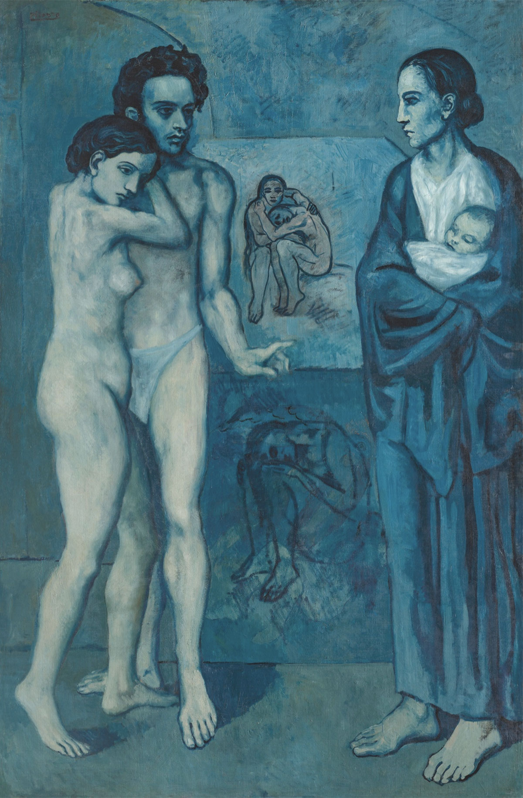

Descrizione
La coppia abbracciata che occupa la sinistra del quadro rappresenta
uno dei temi ricorrenti della pittura di Picasso: è un soggetto
ripreso in diverse opere in cui gli amanti si stringono in una
profonda confidenza. A questo gruppo, che sembrerebbe simbolizzare
l’amore carnale, è contrapposta sulla destra del quadro la donna
coperta da un mantello e con in braccio un bambino. Ispirata a
immagini sacre e dipinta a grandi linee rispetto agli altri elementi
del quadro, la donna coperta personifica la maternità.